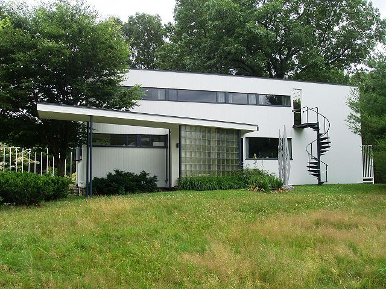
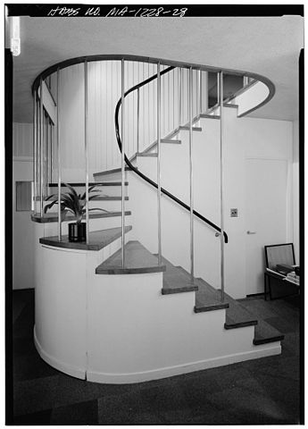

Buildings and structures can be really neat! They house people,
critters, and a whole bunch of other things, while at the same time
serving as works of art.
Some of my favorite things
Here are some of my favorite buildings, with some degree of
organization by connecting styles or themes:
AT&T Long Lines Building, 33 Thomas Street, Manhattan,
NY
Buffalo City Court Building, 50 Delaware Avenue, Buffalo, NY
Gropius House

A front view of the Gropius House. The spiral staircase was added
specifically for Ati, and sourced from a fire escape company.
Photo source:
Wikimedia Commons
I recently had the opportunity to visit the Gropius House in Lincoln,
Massachusetts, and it was certainly worth the drive. Previous house
tours have been strictly colonial works, such as the nearby Ralph
Waldo Emerson House, so this was a fascinating trip into a fusion
of Bauhaus with the same traditional design cues of colonialism.
Completed in 1938, the Gropius House was Walter's way of fulfilling
his desire to experience life in an American countryside during his
tenure at Harvard.

Folded in half to fit the space, the cork flooring of the central
staircase softens steps, and the inner handrail guides one away
from the inside of the steps.
The house's interior was meticulously thought out using Gropius'
experience from the Bauhaus, as well as a synthesis of colonial
design principles.
{kind=link}